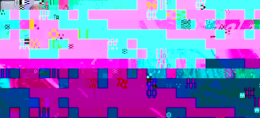

The Globe Project
The Globe ProjectDistributed Systems
Networking
Domain Specific Languages
The Globe ProjectGlobe stands for Global Object Based Environment. The goal of this project is to design and implement a system that simplifies the construction of wide area distributed applications.
An Architecture for A Scalable Wide Area Distributed Systems
Current wide area distributed systems fail to hide implementation aspects related to the distribution of information. Unfortunately, the solutions developed for local systems do not scale, so a different approach is needed. In this paper we present an architecture for distributed systems that scales to support a large number of users and objects. The architecture is based on the concept of distributed shared objects, which are used for sharing and exchanging information over wide area networks. Our architecture provides location and replication transparency, and offers the flexibility needed to cope with the heterogeneity inherent in wide area systems.
P Homburg, M. van Steen, and A.S. Tanenbaum. "An Architecture for a Scalable Wide Area Distributed System". Submitted for publication, October 1995.
Towards Object-based Wide Area Distributed Systems
In order to facilitate the construction of wide area distributed systems, it is necessary that we adopt a model that simplifies application development. In this position paper we advocate an object-based approach. Our approach allows for flexibility because many of the technical details of distribution, such as communication protocols, consistency rules, etc. can be hidden behind the objects' interfaces. In addition, we allow distributed objects to offer alternative implementations for an interface. A client may choose the most suitable implementation. We discuss the use of distributed objects as the means to this end, and compare our approach to existing ones.
M. van Steen, P. Homburg, L. van Doorn, A.S. Tanenbaum, and W. de Jonge. "Towards Object-based Wide Area Distributed Systems". In L.-F. Carbrera and M. Theimer, (eds.), Proceedings International Workshop on Object Orientation in Operating Systems, pp. 224-227, Lund, Sweden, August 1995.
An Object Model for Flexible Distributed Systems
Current distributed applications like E-mail, electronic news, distributed calendars, and network information browsers often have a complex structure. This is partly due to lack of suitable support from the underlying operating system, which is often too low level. At the same time, multi media applications, parallel programs, wide-area applications, and database systems have very different operating system demands. Although it is possible to put support for the above-mentioned systems in a single operating system kernel, this is generally undesirable from a software engineering point of view, as the resulting software may become unmanageable.
In this paper we describe a new model for constructing operating systems and applications in an integrated fashion. Compared to current approaches we provide high-level primitives for supporting distributed and parallel applications. We also provide the flexibility to configure both applications and kernels to only include the functionality that is actually used.
P. Homburg, L. van Doorn, M. van Steen, A.S. Tanenbaum, and W. de Jonge. "An Object Model for Flexible Distributed Systems". In Proceedings 1st Annual ASCI Conference, pp 69-78, Heijen, The Netherlands, May 1995.
Researching the composition of distributed active mobile objects that communicate using messages
The Caltech Infospheres Project researches compositional
systems, which are systems built from interacting components. We are concerned
with the theory and implementation of compositional systems that support peer-to-peer
communication among persistent multithreaded distributed objects. Though we implement
example systems and services in Java and Web technologies, our theories, models, and ideas
are directly applicable to any distributed component-based system. Our group is primarily
concerned with developing reliable distributed applications by composing existing and
newly created software components in structured ways.
 |
The Ninja ProjectUC Berkeley Computer Science Division |
The Ninja project aims to develop a software infrastructure to support the next generation of Internet-based applications. Central to the Ninja approach is the concept of a service, an Internet-accessible application (or set of applications) which is scalable (able to support many thousands of concurrent users), fault-tolerant (able to mask faults in the underlying server hardware), and highly-available (resilient to network and hardware outages). Examples of current and future Ninja services include an Internet stock-trading system; a ``universal inbox'' used to access e-mail, voice mail, pages, and other personal correspondence; and the Ninja Jukebox, which provides real-time streaming audio data served from a collection of music CDs scattered about the network.
In some sense, the current World Wide Web is a service itself; Ninja intends to build upon and expand the notion of Web-based services by providing composability (the ability to automatically aggregate multiple services together into a single entity), customizability (the ability for users to inject code into the system to customize a service's behavior), and accessibility (the ability to access the service from a wide range of devices, including PCs, workstations, cellphones, and Personal Digital Assistants). The end goal of the Ninja project is to enable the development of a menagerie of Internet-based services which are interoperable and immediately accessible across the spectrum of user devices ranging from PCs and workstations to cellphones and Personal Digital Assistants. For example, one should be able to check one's e-mail simply by calling a special number from a cellphone, or equivalently by sitting down at any Internet-connected PC in the world.
 |
JiniTM technology lets you network anything, anytime, anywhere.
Cristina Videira Lopes, Gregor Kiczales
We present an object-oriented language framework for distributed programming called D. D uses the aspect ori-ented programming approach to allow the code for the basic functionality of a distributed application to be writ-ten without having to explicitly deal with distribution and synchronization. Separate code deals with those issues.
The D language framework consists of: (i) Jcore, an object-oriented language used to express the basic function-ality and the activity of the system; (ii) Cool, a language used to express coordination of threads; and (iii) Ridl, a language used to express remote access strategies. A special tool called an Aspect Weaver™ takes the programs written in the different languages and combines them together to produce an executable program with the speci-fied distributed behavior. D builds on existing object-oriented languages, and aggressively adheres to syntactic separation of distribution concerns. D program texts are less tangled and therefore simpler and more reusable than their equivalents written in Java.
© Copyright 1997 Xerox Corporation. All rights reserved.
Download paper
.
Assistant Professor
633 Soda Hall
Electrical Engineering and Computer Science
University of California, Berkeley
During this year at LBNL, I worked on a number of projects, some more research-oriented than others, including the BSD Packet Filter (BPF), tcpdump, the BSD kernel debugger, the BSD kvm library, and the Network Animator nam. BPF improves upon earlier packet capture designs and has been integrated into a number of commercial Unix implementations including Digital Unix and HP-UX. I refined the tcpdump filter specfication language and developed a compiler and optimizer to translate high-level filter specifications into virtual machine code for the BPF filtering engine. For this system, I developed a number of novel optimization techniques tailored specifically to packet filters. Eventually, I factored out the compiler and optimizer into a re-usuable library called libpcap. (The initial version of libpcap was intended as a rough prototype, but I never found the time to finish and refine it, and unfortunately, doing this now is confounded by the large number of applications that assume its current form.) Tcpdump has become a widely used network monitoring, debugging, and data acquistion tool.

M. Abbott et al. Increasing Network Throughput by Integrating Protocol Layers, IEEE/ACM Transactions on Networking, 1(5), Oct 1993.
[Abbo93a]
M. B. Abbott and L. L. Peterson. A language-based approach to protocol implementation. IEEE/ACM Transactions on Networking, 1(1):4-19, Feb. 1993.[Bail94]
M. L. Bailey, B. Gopal, M. A. Pagels, L. L. Peterson, and P. Sarkar. PathFinder: A Pattern-Based Packet Classifier. In Proceedings of the 1st Symposium on Operating System Design and Implementation, Nov. 1994.[Mosb96c] D. Mosberger and L. Peterson. Making Paths Explicit in the Scout Operating System. Proceedings of OSDI '96 (October 1996), 153-168. (HTML)
[Mosb97] David Mosberger. Scout: A Path-based Operating System. PhD Dissertation, Department of Computer Science, University of Arizona (July 1997). Also appears as TR 97-06. (HTML).
[Spat97]
Oliver Spatscheck and Larry Peterson. Escort: A Path-Based OS Security Architecture. Technical Report TR97-17, Department of Computer Science, University of Arizona (November 1997).Active networks allow individual user, or groups of users, to inject customized programs into the nodes of the network. "Active" architectures enable a massive increase in the complexity and customization of the computation that is performed within the network, e.g., that is interposed between the communicating end points.
E. Johnson, A Protocol for Network Level Caching, MIT Master's thesis, May 1998.
U.Legedza, D. Wetherall and J. Guttag, Improving The Performance of Distributed Applications Using Active Networks, IEEE INFOCOM'98.
D. L. Tennenhouse, J. M. Smith, W. D. Sincoskie, D. J. Wetherall, and G. J. Minden, A Survey of Active Network Research, IEEE Communications Magazine, Vol. 35, No. 1, pp80-86. January 1997.
D. Wetherall, J. Guttag, and D. L. Tennenhouse, ANTS: A Toolkit for Building and Dynamically Deploying Network Protocols, IEEE OPENARCH'98, San Francisco, CA, April 1998.
2nd Conference on Domain-Specific LanguagesOctober 3-6, 1999
|
1st Conference on Domain-Specific LanguagesOctober 15-17, 1997
|
A
Slicing-Based Approach for Locating Type Errors
T. B. Dinesh, CWI and Frank Tip, IBM T. J. Watson Research Center
Typed
Common Intermediate Format
Zhong Shao, Yale University
Incorporating
Application Semantics and Control into Compilation
Dawson R. Engler, M.I.T. Laboratory for Computer Science
Code
Composition as an Implementation Language for Compilers
James M. Stichnoth and Thomas Gross, Carnegie Mellon University
HEPERA:
A System for Rapid Implementation of Domain Specific Languages
Rickard E. Faith, Lars S. Nyland, and Jan F. Prins, University of North Carolina,
Chapel Hill
| The ESTEREL Language |
|---|
Esterel is both a language, dedicated to programming reactive systems, and a compiler which translates Esterel programs into finite-state automata. It is one of a family of synchronous languages which are particularly well-suited to programming reactive systems, including real-time systems and control automata.
The compiler can be used to generate a hardware or software implementation of the reactive kernel: either C-code is generated which can then be embedded in a larger program that handles the interface and data manipulations, or hardware is generated in the form of netlists of gates, which can then be embedded in a larger system. There is a symbolic, graphical debugger, and support for verification in the form of bisimulation or BDD-based safety property checking. In addition, extensive optimization is available.
The Foundations of Esterel
The Esterel Primer Gérard Berry.
DSP Specification Using the Silage Language
Paul Hilfinger and Jan Rabaey
Digital signal processing (DSP) algorithms are most easily described using a block diagram or schematic representation of the data flow in the algorithm. This can be captured in a graphical format[Lee89, Goering90], which is convenient if the number of blocks is relatively small and the interconnection is not complex. For more complex systems it is often more convenient to use a text representation. However, the commonly used procedural languages such as C, impose an ordering on the operations, and the variables actually represent memory locations, rather than true arithmetic values from which meaningful arithmetic equations can be written. An applicative (functional or single assignment) language accurately represents the computation which is to be performed, rather than how it is to be calculated. Silage is such a language with the addition of constructs (e.g. delay) that are commonly found in DSP applications.
|  |
The Ptolemy project focuses on system-level modeling, simulation, and design of reactive and embedded systems, providing high-level support for signal processing, communications, and real-time control. The key underlying principle in the project is the use of multiple concurrent models of computation in a hierarchical heterogeneous design environment. The work is conducted in the Department of Electrical Engineering and Computer Sciences of the University of California at Berkeley. The project is directed by Prof. Edward Lee and Prof. David Messerschmitt. The project is named after Claudius Ptolemaeus, the second century Greek astronomer, mathematician, and geographer.
CS264: Language Design and Implementation
Date Modified: 12/10/98